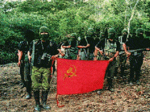
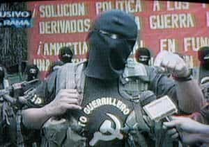

Quintus can be found at qcurtius.com. He is the author of the books On Duties, Thirty Seven, Sallust: The Conspiracy Of Catiline And The War Of Jugurtha, and other books. His work has been reviewed at Taki's Magazine. He can be followed on Twitter


Dictators get little gratitude.
When they are on top, everyone loves (or claims to love) them; but when they fall or leave office, they are reviled, accused, and loathed. Chile’s former strongman Pinochet spent the last years of his life fighting criminal charges, yet a good argument can be made that his authoritarian rule laid the groundwork for Chilean economic progress after him.
The same perhaps could be said of South Korean dictator Park Chung-Hee and Peru’s Alberto Fujimori. Maybe the safest survival tactic for a dictator is to die in office, out of reach of the courts and investigators.
The Fujimori case is an interesting one. I had heard the other day that his daughter had recently been defeated in her presidential election campaign. And I had remembered how her father, Alberto Fujimori, had played a major role in the defeat of the communist “Shining Path” insurgency during his term in office from 1990 to 2000.

The defeat of the Shining Path was no small achievement. This vicious guerrilla movement had terrorized Peru all through the 1980s, and at one point came very close to overthrowing the government. Its specialty was rural terror: peasants and laborers who refused to join the group were executed and their villages burned.
The spiritual leader of the Shining Path (Sendero Luminoso) was a bespectacled philosophy professor named Abimael Guzman. Not satisfied with the progress of political reforms that might change Peru’s stratified social and economic system, Guzman launched an armed Maoist insurgency in 1980. The group’s doctrine was a weird mix of communist and indigenous ideas. Their strategy was to attack trade unions, peasants, and government officials in an effort to separate the people from the political leadership.
From 1980 onwards, Guzman went into hiding and never appeared publicly. He sought to create a mythological aura about himself, in much the same way as Osama Bin Laden. His methods—violence, sabotage, and guerrilla warfare—were designed to erode the credibility of the state, and prepare the way for his ascent, which he thought might take decades.
But the government eventually learned counter-insurgency methods. These began before the election of Alberto Fujimori, but he definitely added impetus and urgency to them. In 1992, Guzman himself was captured and exhibited to the public in a cage. It was a stunning reversal for the Shining Path, and thereafter it gradually withered away.
How had the government won the war? These were the major methods used.
From the late 1980s, the government began to establish civil defense committees (CDCs, or comites de civil) in the countryside. These were basically vigilante groups designed to be government allies. But the government shrewdly exploited the fact that the Shining Path had alienated much of the rural population by their excessive violence. The CDCs also added an extra intelligence arm to the government.
Peru had long been a place where the majority of the country’s wealth was in the hands of a few. Land was especially important to the rural peasant, and he naturally preferred to work his own land. Stealing the Shining Path’s thunder by pushing through agrarian reform was another masterstroke.

The rebels liked to claim that they were acting in the peasants’ best interests, but this became more and more difficult to do once land reforms had been implemented. In 1990, for example, over 2400 hectares of land were distributed to about 350 families in Otuzco province.
Fujimori took action to stamp out corruption. He not only removed corrupt officials, but he introduced anonymity for federal judges. The Shining Path thus became unable to target and intimidate judges as it had done in the past.
Amnesties seem to work well in defusing insurgencies. As we noted in a previous article, Algeria used one in its own fight against Islamist insurgencies. Fujimori introduced the Repentance Law of 1992, which granted sentence commutations and amnesties to those who renounced the insurgency and agreed to inform on their fellow members. This measure alone began a steady stream of defectors leaving the Shining Path, and in the long term proved fatal to the movement.
Fujimori placed an increased emphasis on “special forces,” commando units, and patient intelligence collection. These efforts were rewarded in 1992 when his men located and captured Guzman himself. He had been hiding at his girlfriend’s apartment. Intelligence operatives noticed that the volume of trash outside the residence exceeded the normal quantity produced by one person. Trash pulls revealed evidence of Guzman’s presence (e.g., his favorite cigarette brand, medications, etc.), and the site was raided.
All of these measures had the net effect of isolating the insurgents from their rural bases. This is absolutely critical in getting the upper hand over rural guerrilla movements. Besides all of the measure noted above, the Shining Path did itself very few favors by stepping up its campaign of terror and violence in an ever-increasing spiral of viciousness.
This, in short, is how Fujimori’s government broke the back of the Shining Path.
Its desperation caused it to lash out again and again, much as ISIS is doing today in Syria and Iraq. Exploding car bombs in urban areas (e.g., the Tarata Bombing of 1992) is the quickest way to turn public opinion against any movement that claims to speak for the people.
Despite all this, however, Fujimori’s political enemies finally caught up with him. He was implicated in “human rights” violation after another, and also accused of financial corruption. Anyone who knows anything about counter-insurgency warfare knows that it is impossible to defeat guerrillas by playing by the standard rule-book.
Fujimori, like Pinochet, is still a controversial figure. Some admire his ruthless action and make the case that no other methods could have produced results. Others portray him as a corrupt dictator, trampling on the rights of the indigenous Peruvians (he presided over a controversial rural sterilization campaign) and journalists.
In the same way, Pinochet’s admirers (of which there are many) claim that he rescued the country from communist subversion and laid the foundation for economic prosperity, while his detractors point to evidence of government-sanctioned torture and disappearances of regime opponents. The individual reader will have to judge for himself.
In any case, we may leave such political judgments for the history books. But the lessons on how the Shining Path was defeated are more relevant today than ever.
Read More: The Algerian War Of Independence